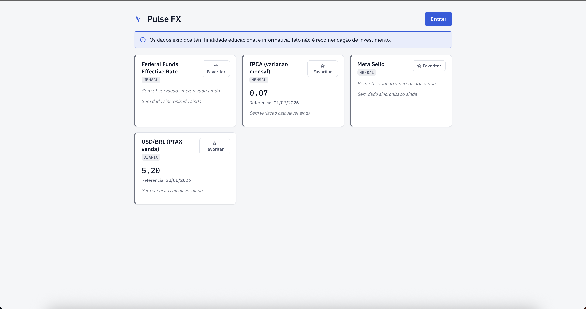
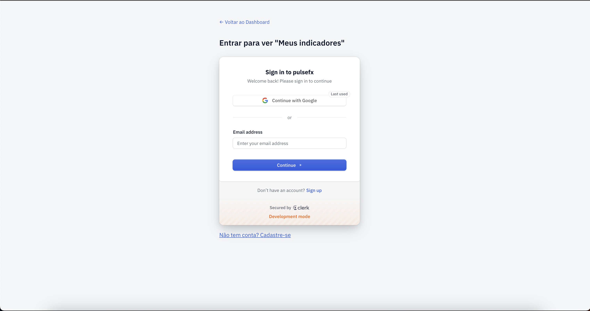
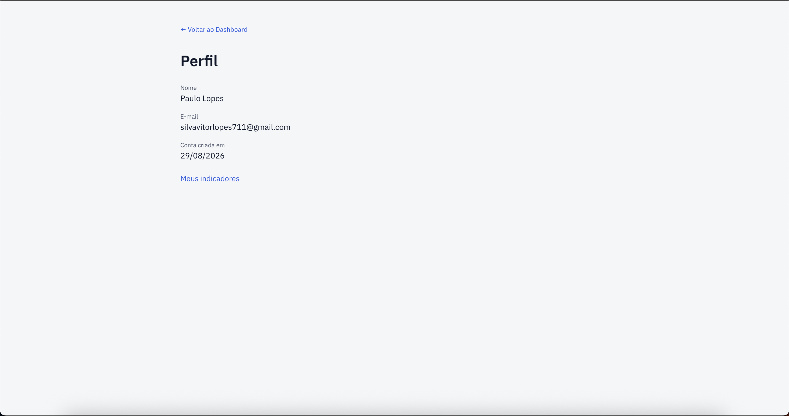

Pulse FX
MVP de acompanhamento de câmbio (USD/BRL) e indicadores macro, com dados persistidos, API própria e cliente web — construído como avaliação técnica de produto, engenharia e reprodutibilidade.
Pulse FX sincroniza câmbio e indicadores macroeconômicos a partir de fontes públicas — Banco Central do Brasil (PTAX, Meta Selic, IPCA) e FRED (Federal Funds Effective Rate) — persiste em PostgreSQL e expõe tudo por uma API própria consumida por um cliente web em React.
O MVP cobre dashboard de indicadores, detalhe histórico por série, sincronização agendada sem chamada direta às fontes externas no caminho de leitura, favoritos com persistência real por conta de usuário (Clerk), e uma tela de perfil.
Arquitetura
Diagrama de arquitetura interativo
Módulos, camadas (Domain/Application/Infrastructure/Interface) e fluxo de dado — sincronização → indicadores → API → web.
Fluxo do produto
Dashboard
Card por indicador do conjunto fechado (USD/BRL PTAX, Meta Selic, IPCA, Federal Funds Effective Rate) — nome, último valor, data de referência e variação, com o disclaimer educacional sempre visível. Nunca chama BCB/FRED diretamente: lê só o que já foi sincronizado.

Login / cadastro
Único ponto do MVP com autenticação — necessário para favoritar indicadores e ver o perfil. Tema do formulário customizado com a paleta e tipografia do próprio Pulse FX em vez do padrão genérico da Clerk.

Perfil
Nome, e-mail e data de criação da conta, lidos direto da sessão Clerk — sem réplica de dado de conta no Postgres do Pulse FX.

Meus indicadores (favoritos)
Marcar/desmarcar favorito com persistência real no backend, vinculada à conta — sobrevive a reload e a login em outro dispositivo. Mesmo formato de card do Dashboard, mesma regra de variação.

Detalhe da série
Histórico do indicador (janela por tipo de série), texto de limitações dos dados sempre visível — fonte, defasagem de sincronização, possibilidade de revisão pela fonte, sem interpolação de lacuna. Mesma variação exibida no Dashboard, para a mesma data de referência.


Rodar o projeto localmente
Um comando sobe tudo: Postgres (Docker), migrations, API e web juntos. Pré-requisitos, stack completa, variáveis de ambiente e troubleshooting estão no guia de setup.
git clone <repo> && cd pulsefx && cp .env.example .env && npm install && npm run dev
Ver guia completo de setup →